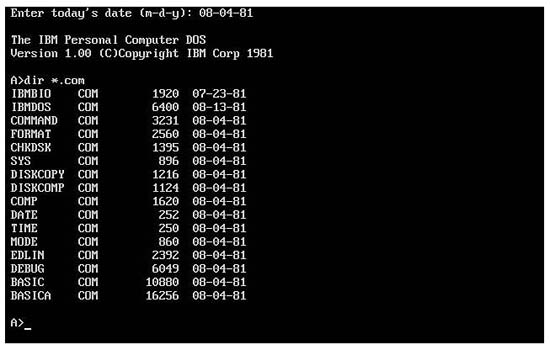

從專有軟體到開源軟體─微軟的開源之路


（圖片引用自︰https://commons.wikimedia.org/wiki/File:Ms_dos.jpg）
{kind=link}
2014年3月26日，微軟與計算機歷史博物館（Computer History Museum）合作，將較早期版 MS-DOS 和 Word for Windows（Windows 1.1a 版）的原始碼公開。儘管微軟在近幾年已經對開放原始碼一事開始積極配合與參與，這仍是第一個被釋放出來的微軟作業系統原始碼。
早年微軟對於自由軟體的態度相當排斥，漠視社會上對於微軟公開原始碼的呼聲，找出許多理由：諸如資訊安全、開發效率、商業機密等等，嚴詞拒絕公開其原始碼。而後開放原始碼活動席捲了整個世界，人們發現開放原始碼能夠讓程式開發的周期大幅縮短，減少非常多不必要的重複開發，並且讓世界上所有的人都能參與應用設計，所帶來的效益提升與創新都遠遠不是一家公司的工程師所能比擬的，那怕龐大如微軟聚集了幾千名優秀的工程師也一樣。
時至今日，GOOGLE 的 ANDROID 系統就是公開原始碼的一員，而開發者與使用者都從其中獲得龐大的演進動力，這世界完全不一樣了。 而微軟在這過程中也慢慢地發現，公開原始碼對其並不見得全然都是壞處，尤其在資訊安全這部分是完全無法迴避的：許多國家的國家安全組織對於不公開原始碼的軟體懷有恐懼，無法確信裡面是否有來自美國老大哥的間諜程式在裡面，而公開原始碼能有效的減低這種疑慮。
因此 2004 年 9 月 20 日，微軟宣布將提供 Microsoft Office 2003 程式原始碼的免費存取授權，給包括臺灣在內的參加「政府安全計劃」的國家與國際性組織。這很大程度上清除了 1999 年以來的美國國家安全局間諜程式存的的謠言。另外微軟也加入了各種開放原始碼的組織，在 LINUX 與 JAVA 等各種團體中都可以看到微軟的身影，甚至成為主要合作公司之一。
今年初，.NET 編譯平台 Roslyn 也開放了原始碼，雖然這是一個僅對於開發者來說比較有意義的項目，但是依然是一個重要的風向指標，顯示微軟對於自由軟體，或者是說對公開原始碼越來越認同了。但是值得注意的是，微軟這次是捐給博物館作為展覽使用，雖然可以公開下載，但是在使用上則沒有任何的授權，所以並不符合現在所謂的開源軟體的定義，僅是個可以參考與觀摩研究的展覽品罷了。
然而，儘管這次公開的是已經是 30 年的老軟體了，但仍然有著不凡的意義，畢竟這些軟體伴隨著我們的成長與乘載著過去的記憶，在翻閱這些原始碼以緬懷過去以外，也象徵著開放原始碼的潮流不可阻擋，在可見的未來應該會有更多的原始碼釋出，讓我們拭目以待吧。